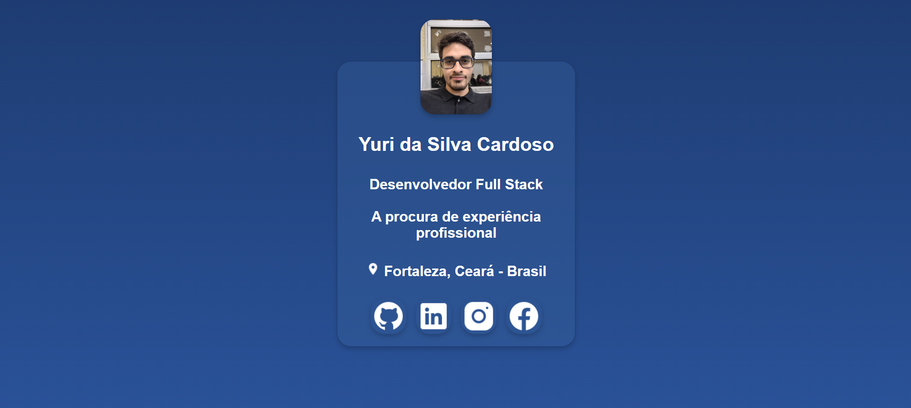

Cartão de Perfil Responsivo
Cartão de perfil digital com foto, biografia e links para redes profissionais. Layout responsivo com Flexbox e media queries, adaptado do celular ao desktop.
Páginas construídas apenas com HTML e CSS, com foco em estrutura semântica, layout responsivo (Flexbox e Grid) e acessibilidade.

Cartão de perfil digital com foto, biografia e links para redes profissionais. Layout responsivo com Flexbox e media queries, adaptado do celular ao desktop.
Ainda não há projetos publicados aqui. Novos projetos estão em desenvolvimento!